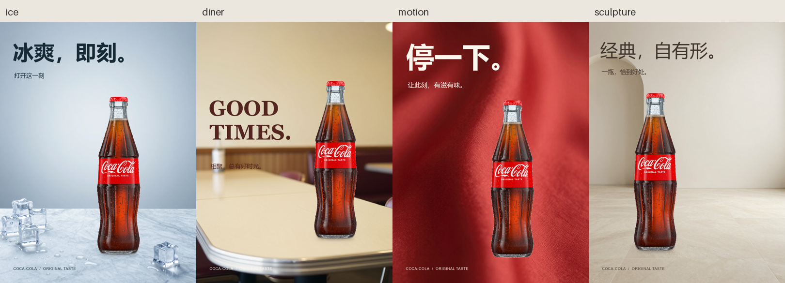
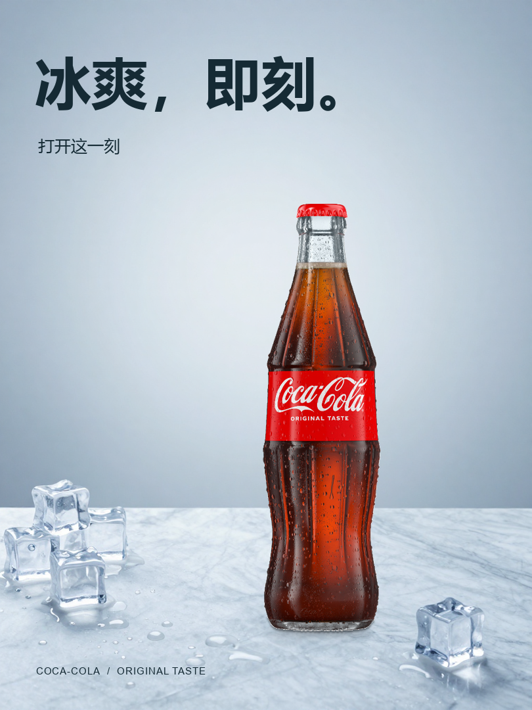
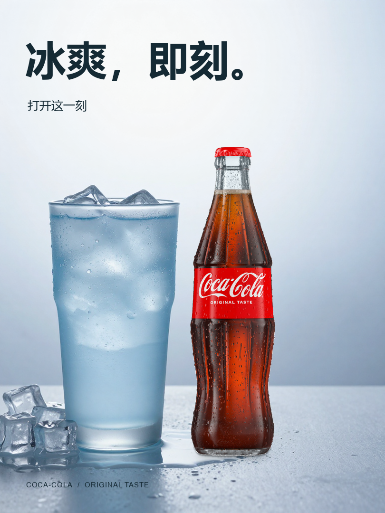
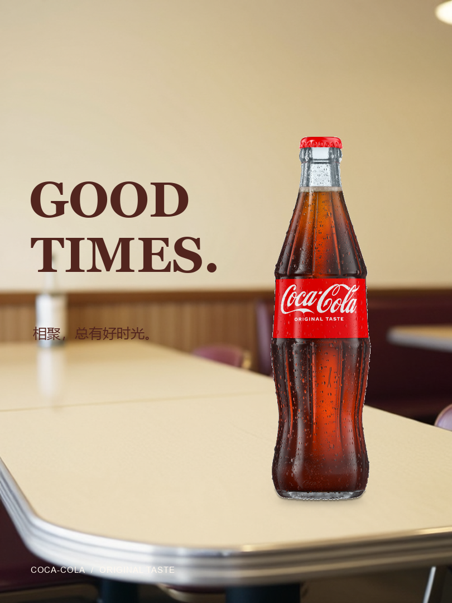
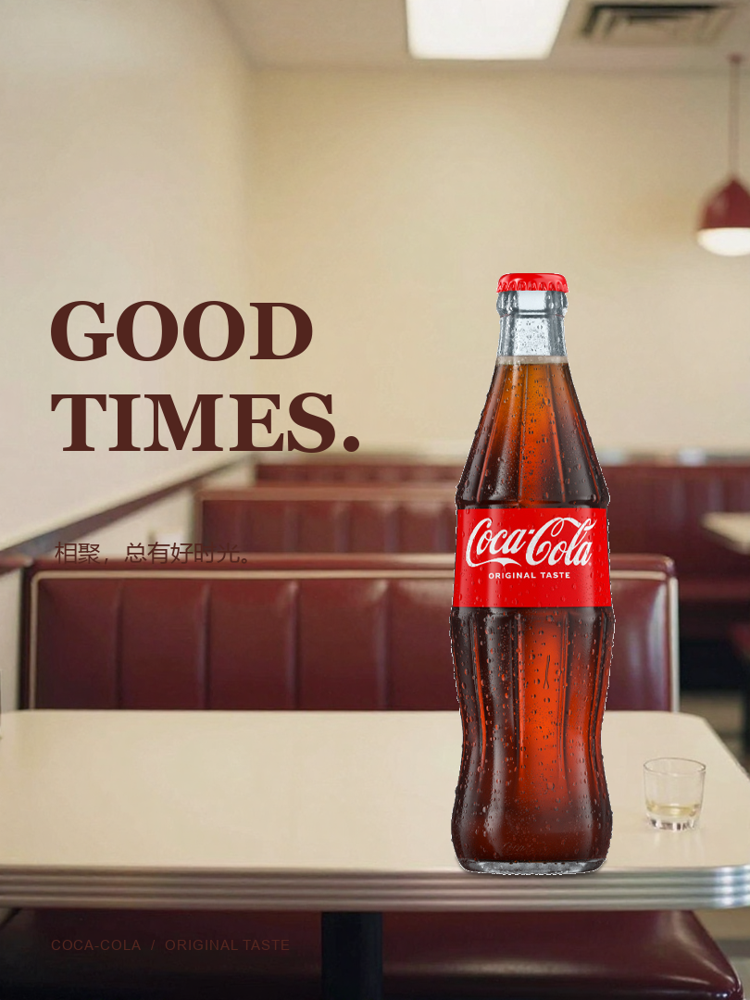
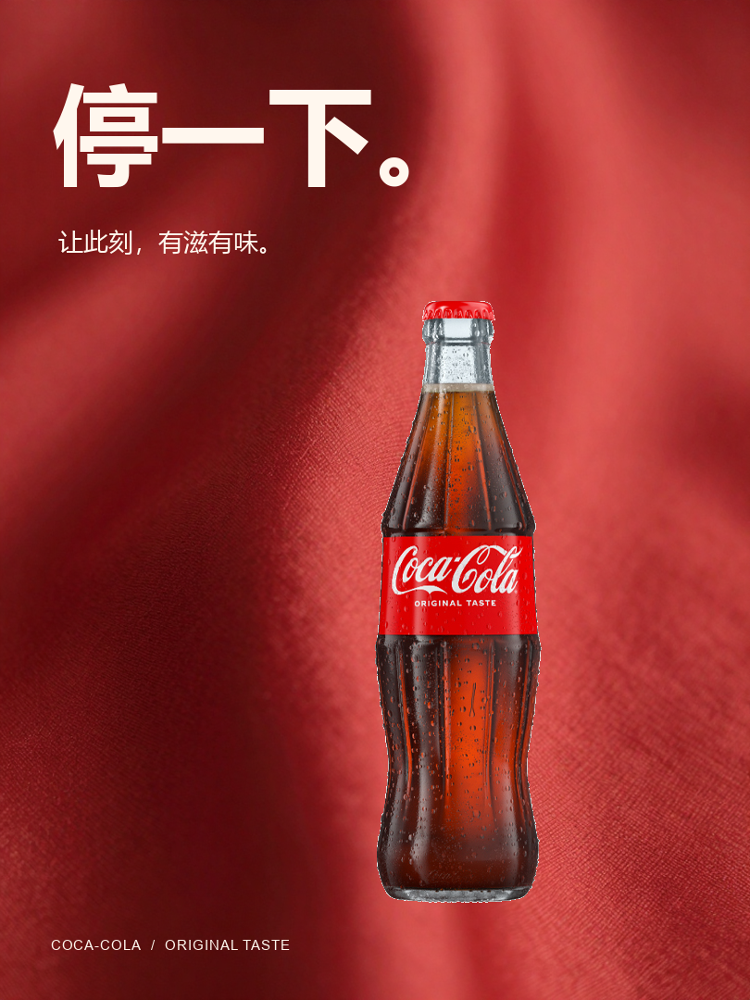
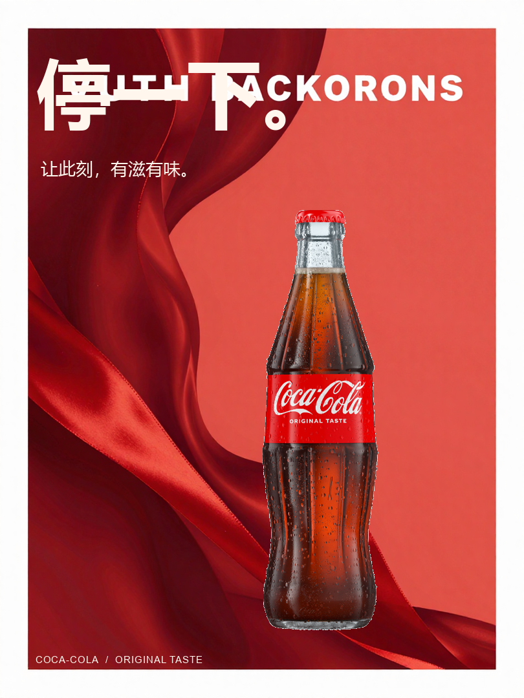
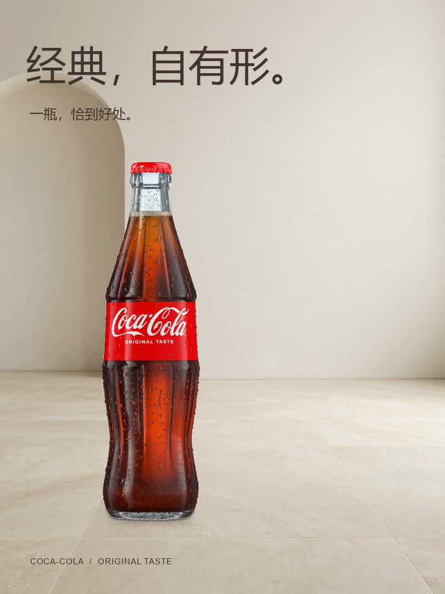
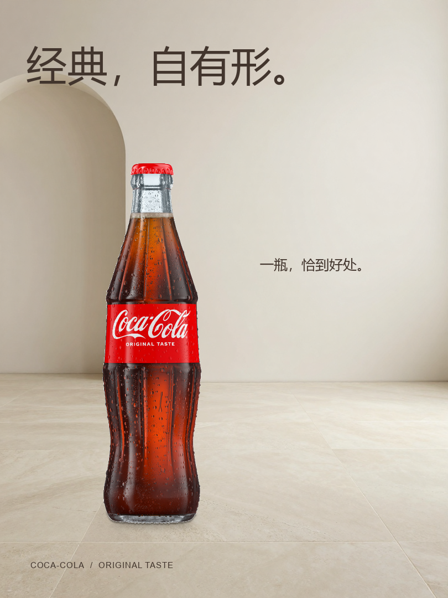

四个完整方向，分别表达温度、相聚、节奏与形体。ComfyUI 实际生成场景，原商品图合成，程序排版，千问完成三轮整张评审。最终偏好为红色动感；其余三款待修。本轮由 Codex 指导创意和修改，尚未完成商业交付验收。

待修稿

Contact shadow under the bottle base is very faint against the bright veined marble, so the heaviest element reads slightly light-anchored.；The bottom-right ice cube sits close to the price line's visual lane, mildly crowding the lower margin.

待修稿

Bottle reads pasted onto the counter: contact occlusion is too weak for the warm ambient diner light and thePerspective plane.；Footer price line loses readability where it crosses the bright chrome trim and dark booth blur.；Unspecified blurred white cylinder at mid-left acts as a distracting prop the brief did not authorize.

模型认可的创意稿；商业交付未验收


待修稿

Grounding is under-resolved for a gallery still-life: the contact shadow is faint and the bottle's frontal packshot light never meets the stone's soft gradient.；Title and subtitle hug the upper-left corner while the product sits center-left, leaving the right two-thirds of the wall empty and unbalancing the hierarchy.

商品源图为 180×650 原生裁切图，保持标签与瓶型；瓶颈白底透射与印刷分辨率尚有限制。评审是本次单组方向选择，不代表重复生成稳定通过率。